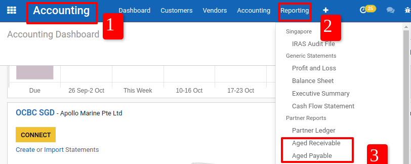
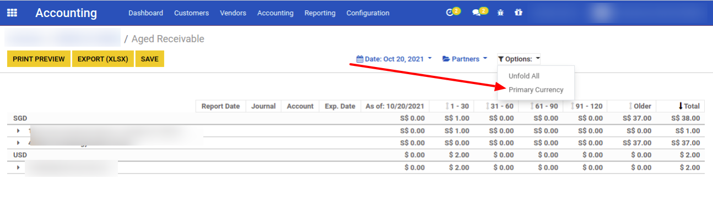

<section class="oe_container">
	<div>
		<h1 class="text-center">Show Foreign Currency On Aged Report <br/>(AR/AP)</h1>
		<br/>
		<p class="mb16 text-center text-black-dark" style="font-family: Roboto;font-weight: initial;color: #091E42;text-align:center;font-size: 16px;">
			- Multi Currency On Aged Receivable/Payable Report.
		</p>
		<br/>
		<p class="mb16 text-center text-black-dark" style="font-family: Roboto;font-weight: initial;color: #091E42;text-align:center;font-size: 16px;">
			- Use this module if you want to show foreign currency on aged receivable & payable report.
		</p>
		<br/>
		<p class="mb16 text-center text-black-dark" style="font-family: Roboto;font-weight: initial;color: #091E42;text-align:center;font-size: 16px;">Ex : Open Aged Receivable Report.
		</p>
		
		<br/><br/>
		<p class="mb16 text-center text-black-dark" style="font-family: Roboto;font-weight: initial;color: #091E42;text-align:center;font-size: 14px;">
			On aged report, there is a filter 'Options > Primary Currency' to show aged report based on primary currency company. Unselected this filter to show aged report based on currency transaction.
		</p>
		
		<br/><br/>
		<h2 class="text-center">Note : This module can only be used if one partner has one currency transaction instead of multiple currencies.</h2>
		<h2 class="text-center">Need to create new partner for solution this like : <br/>1. Odoo (USD)<br/>2. Odoo (SGD)</h2>
		<br/>
		

	</div>
</section>
